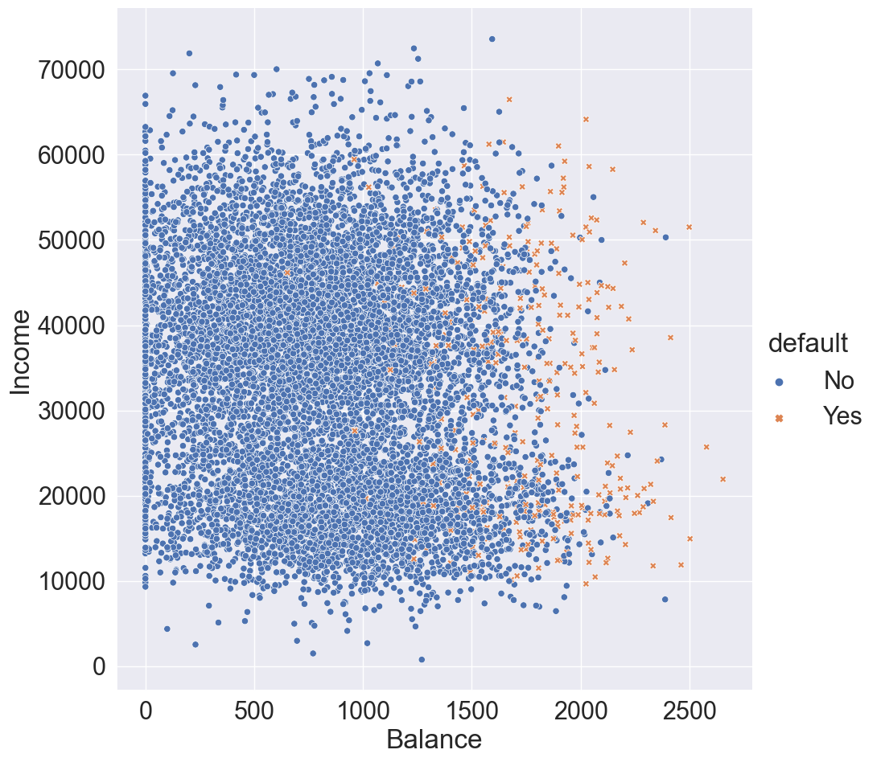
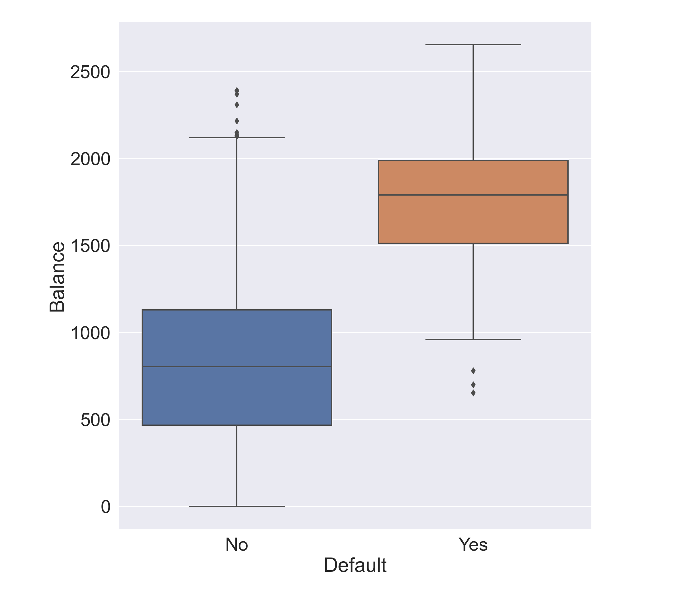
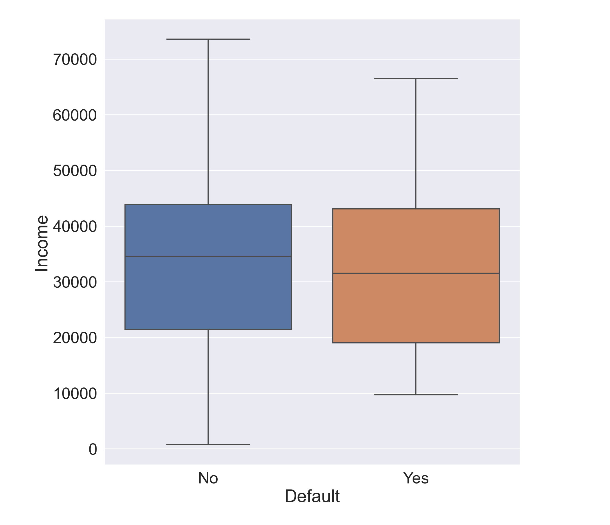
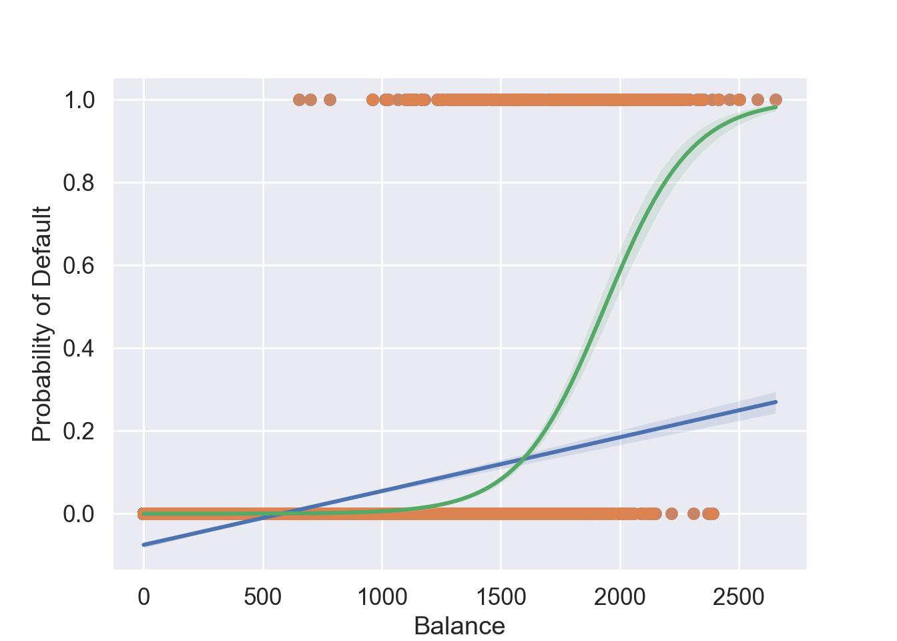
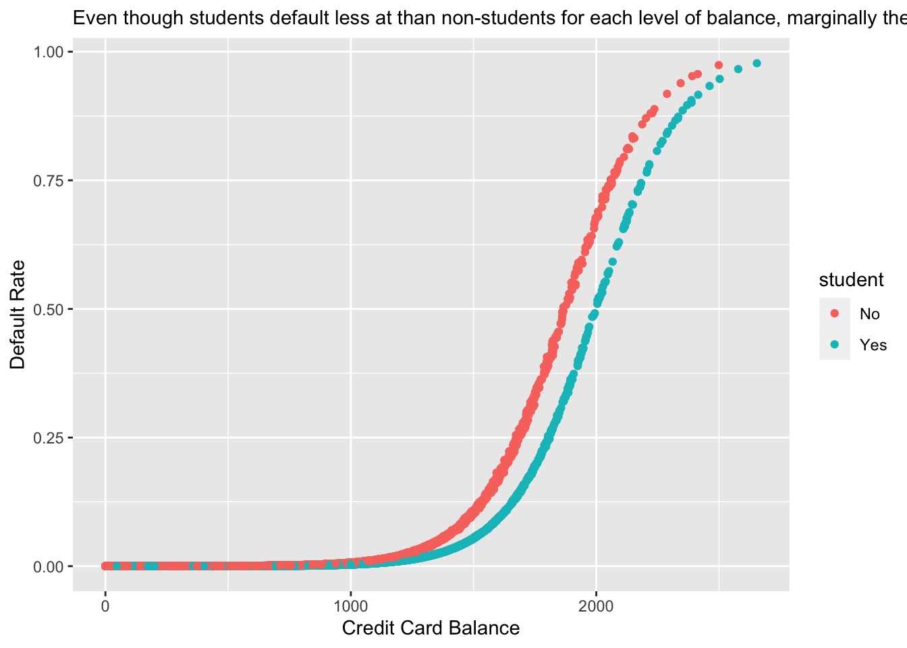
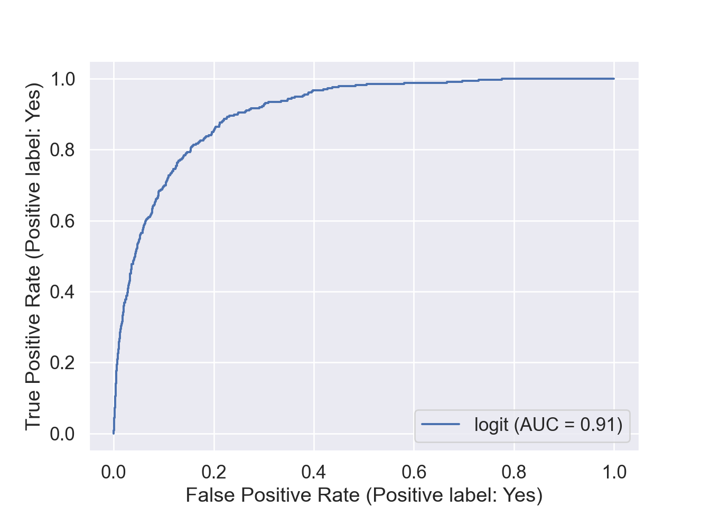
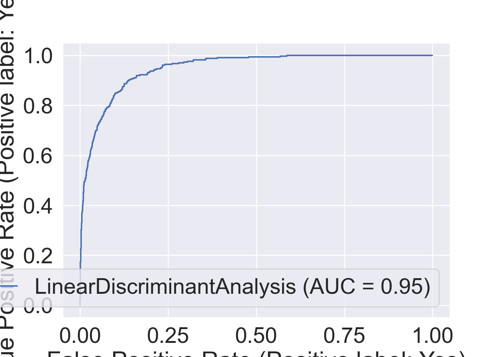
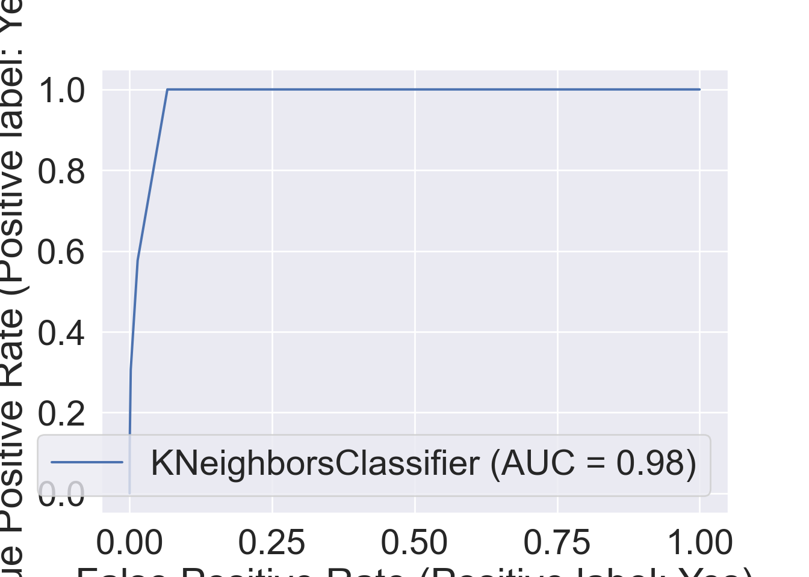

R version 4.2.2 (2022-10-31)
Platform: x86_64-apple-darwin17.0 (64-bit)
Running under: macOS Big Sur ... 10.16
Matrix products: default
BLAS: /Library/Frameworks/R.framework/Versions/4.2/Resources/lib/libRblas.0.dylib
LAPACK: /Library/Frameworks/R.framework/Versions/4.2/Resources/lib/libRlapack.dylib
locale:
[1] en_US.UTF-8/en_US.UTF-8/en_US.UTF-8/C/en_US.UTF-8/en_US.UTF-8
attached base packages:
[1] stats graphics grDevices utils datasets methods base
loaded via a namespace (and not attached):
[1] Rcpp_1.0.9 here_1.0.1 lattice_0.20-45 png_0.1-8
[5] rprojroot_2.0.3 digest_0.6.30 grid_4.2.2 lifecycle_1.0.3
[9] jsonlite_1.8.4 magrittr_2.0.3 evaluate_0.18 rlang_1.0.6
[13] stringi_1.7.8 cli_3.4.1 rstudioapi_0.14 Matrix_1.5-1
[17] reticulate_1.26 vctrs_0.5.1 rmarkdown_2.18 tools_4.2.2
[21] stringr_1.5.0 glue_1.6.2 htmlwidgets_1.6.0 xfun_0.35
[25] yaml_2.3.6 fastmap_1.1.0 compiler_4.2.2 htmltools_0.5.4
[29] knitr_1.41
usingInteractiveUtilsversioninfo()
1 Overview of classification
Qualitative variables take values in an unordered set \(\mathcal{C}\), such as: \(\text{eye color} \in \{\text{brown}, \text{blue}, \text{green}\}\).
Given a feature vector \(X\) and a qualitative response \(Y\) taking values in the set \(\mathcal{C}\), the classification task is to build a function \(C(X)\) that takes as input the feature vector \(X\) and predicts its value for \(Y\), i.e. \(C(X) \in \mathcal{C}\).
Often we are more interested in estimating the probabilities that \(X\) belongs to each category in \(\mathcal{C}\).
# Load the pandas libraryimport pandas as pd# Load numpy for array manipulationimport numpy as np# Load seaborn plotting libraryimport seaborn as snsimport matplotlib.pyplot as plt# Set font sizes in plotssns.set(font_scale =2)# Display all columnspd.set_option('display.max_columns', None)# Import Credit Default dataDefault = pd.read_csv("../data/Default.csv")Default
default student balance income
0 No No 729.526495 44361.625074
1 No Yes 817.180407 12106.134700
2 No No 1073.549164 31767.138947
3 No No 529.250605 35704.493935
4 No No 785.655883 38463.495879
... ... ... ... ...
9995 No No 711.555020 52992.378914
9996 No No 757.962918 19660.721768
9997 No No 845.411989 58636.156984
9998 No No 1569.009053 36669.112365
9999 No Yes 200.922183 16862.952321
[10000 rows x 4 columns]
# Visualize income ~ balancesns.relplot( data = Default, x ='balance', y ='income', hue ='default', style ='default', height =10 ).set( xlabel ='Balance', ylabel ='Income' )

plt.clf()
# Visualize balance ~ defaultsns.boxplot( data = Default, x ='default', y ='balance' ).set( xlabel ='Default', ylabel ='Balance' )

# Visualize income ~ defaultsns.boxplot( data = Default, x ='default', y ='income' ).set( xlabel ='Default', ylabel ='Income' )

# Visualize student ~ defaultsns.countplot( data = Default, x ='default', hue ='student' ).set( xlabel ='Default', ylabel ='Count' )
# A tibble: 10,000 × 4
default student balance income
<fct> <fct> <dbl> <dbl>
1 No No 730. 44362.
2 No Yes 817. 12106.
3 No No 1074. 31767.
4 No No 529. 35704.
5 No No 786. 38463.
6 No Yes 920. 7492.
7 No No 826. 24905.
8 No Yes 809. 17600.
9 No No 1161. 37469.
10 No No 0 29275.
# … with 9,990 more rows
If we code default as \[
Y = \begin{cases}
0 & \text{if No} \\
1 & \text{if Yes}
\end{cases},
\] can we simply perform a linear regression of \(Y\) on \(X\) and classify as Yes if \(\hat Y > 0.5\)?
Since \(\operatorname{E}(Y \mid X = x) = \operatorname{Pr}(Y=1 \mid X = x)\), we might think that linear regression if perfect for this task.
The issue is that linear regression may produce probabilities <0 or >1, which does not make sense.
# 0-1 (No-Yes) codingDefault['y'] = (Default['default'] =='Yes').astype(int)# Linear regression fit vs logistic regression fitsns.regplot( data = Default, x ='balance', y ='y', label ='Linear regression' )sns.regplot( data = Default, x ='balance', y ='y', logistic =True, label ='Logistic regression', line_kws = {'color': 'g'} ).set( xlabel ='Balance', ylabel ='Probability of Default' )

Figure 1: Predicted probabilities by linear regression (blue line) vs logistic regression (green line).
Now suppose we have a response variable with three possible values. A patient presents at the emergency room, and we must classify them according to their symptoms. \[
Y = \begin{cases}
1 & \text{if stroke} \\
2 & \text{if drug overdose} \\
3 & \text{if epileptic seizure}
\end{cases}.
\] This coding suggests an ordering, and in fact implies that the difference between stroke and drug overdose is the same as between drug overdose and epileptic seizure.
Linear regression is not appropriate here. Multiclass Logistic Regression or Discriminant Analysis are more appropriate.
A bit of rearrangement gives \[
\log \left( \frac{p(X)}{1 - p(X)} \right) = \beta_0 + \beta_1 X_1 + \cdots + \beta_p X_p.
\] This monotone transformation is called the log odds or logit transformation of \(p(X)\).
We use maximum likelihood to estimate the parameters. That is find \(\beta_0, \ldots, \beta_p\) that maximizes the likelihood function \[
\ell(\beta_0, \ldots, \beta_p) = \prod_{i:y_i=1} p(x_i) \prod_{i: y_i = 0} [1 - p(x_i)].
\]
from sklearn.linear_model import LogisticRegression# code student as numerical 0/1Default['x_student'] = Default['student'] =='Yes'y, X = Default['default'], Default[['x_student', 'balance', 'income']]# Fit logistic regressionlogit_fit = LogisticRegression().fit(X, y)logit_fit# Predicted labels from logistic regression
LogisticRegression()
In a Jupyter environment, please rerun this cell to show the HTML representation or trust the notebook. On GitHub, the HTML representation is unable to render, please try loading this page with nbviewer.org.
LogisticRegression()
logit_pred = logit_fit.predict(X)# Confusion matrix from the QDAlogit_cfm = pd.crosstab( logit_pred, y, margins =True, rownames = ['Predicted Default Stats'], colnames = ['True Default Status'] )logit_cfm
True Default Status No Yes All
Predicted Default Stats
No 9609 271 9880
Yes 58 62 120
All 9667 333 10000
Overall training accuracy of logistic regression is
import statsmodels.api as smimport statsmodels.formula.api as smf# Fit logistic regressionlogit_mod = smf.logit( formula ='y ~ balance + income + student', data = Default ).fit()
Optimization terminated successfully.
Current function value: 0.078577
Iterations 10
logit_mod.summary()
Logit Regression Results
Dep. Variable:
y
No. Observations:
10000
Model:
Logit
Df Residuals:
9996
Method:
MLE
Df Model:
3
Date:
Mon, 16 Jan 2023
Pseudo R-squ.:
0.4619
Time:
18:34:53
Log-Likelihood:
-785.77
converged:
True
LL-Null:
-1460.3
Covariance Type:
nonrobust
LLR p-value:
3.257e-292
coef
std err
z
P>|z|
[0.025
0.975]
Intercept
-10.8690
0.492
-22.079
0.000
-11.834
-9.904
student[T.Yes]
-0.6468
0.236
-2.738
0.006
-1.110
-0.184
balance
0.0057
0.000
24.737
0.000
0.005
0.006
income
3.033e-06
8.2e-06
0.370
0.712
-1.3e-05
1.91e-05
Possibly complete quasi-separation: A fraction 0.15 of observations can be perfectly predicted. This might indicate that there is complete quasi-separation. In this case some parameters will not be identified.
library(gtsummary)logit_mod <-glm(default ~ balance + income + student, family = binomial, data = Default)logit_mod
Call: glm(formula = default ~ balance + income + student, family = binomial,
data = Default)
Coefficients:
(Intercept) balance income studentYes
-1.087e+01 5.737e-03 3.033e-06 -6.468e-01
Degrees of Freedom: 9999 Total (i.e. Null); 9996 Residual
Null Deviance: 2921
Residual Deviance: 1572 AIC: 1580
logit_mod %>%tbl_regression()
Characteristic
log(OR)1
95% CI1
p-value
balance
0.01
0.01, 0.01
<0.001
income
0.00
0.00, 0.00
0.7
student
No
—
—
Yes
-0.65
-1.1, -0.18
0.006
1 OR = Odds Ratio, CI = Confidence Interval
We interpret the logistic regression coefficient as the expected change in log odds associated with one-unit increase in the corresponding predictor.
Wait! Why the coefficient of student is negative, contradicting with the plot?
Confounding:student status is confounded with balance. Students tend to have higher balances than non-students, so their marginal default rate is higher than for non-students.
But for each level of balance, students default less than non-students.
# Visualize balance ~ defaultsns.boxplot( data = Default, x ='student', y ='balance' ).set( xlabel ='Student Status', ylabel ='Credit Card Balance' )
Code
# Add predicted probabilities to DataFrameDefault['yhat'] = logit_mod.predict()# Visualize yhat ~ balancesns.relplot( data = Default, x ='balance', y ='yhat', kind ='line', hue ='student', height =8).set( xlabel ='Credit Card Balance', ylabel ='Default Rate')
Figure 2: Student status confounds with credit card balance. Students tend to have higher balances than non-students. Even though students default less at than non-students for each level of balance, marginally their default rate is higher than for non-students.
Default %>%mutate(yhat = logit_mod$fitted.values) %>%ggplot() +geom_point(mapping =aes(x = balance, y = yhat, color = student)) +labs(x ="Credit Card Balance",y ="Default Rate",subtitle ="Even though students default less at than non-students for each level of balance, marginally their default rate is higher than for non-students." )

5 Multinomial logit regression
For more than two classes, we generalize logistic regression to \[
\operatorname{Pr}(Y = k \mid X) = \frac{e^{\beta_{0k} + \beta_{1k} X_1 + \cdots + \beta_{pk} X_p}}{\sum_{\ell = 1}^K e^{\beta_{0\ell} + \beta_{1\ell} X_1 + \cdots + \beta_{p\ell} X_p}}.
\] Note each class has its own set of regression coefficients.
Another approach for classification is to model the distribution of \(X\) in each of the classes separately, and then use Bayes theorem to flip things around and obtain \(\operatorname{Pr}(Y = j \mid X)\).
When we use normal (Gaussian) distributions for each class, this leads to linear or quadratic discriminant analysis.
However, this approach is quite general, and other distributions can be used as well. We will focus on normal distributions.
Thomas Bayes was a famous mathematician whose name represents a big subfield of statistical and probabilistic modeling. Here we focus on a simple result, known as Bayes theorem: \[\begin{eqnarray*}
\operatorname{Pr}(Y = k \mid X = x) &=& \frac{\operatorname{Pr}(X = x \mid Y = k) \cdot \operatorname{Pr}(Y = k)}{\operatorname{Pr}(X = x)} \\
&=& \frac{\pi_k f_k(x)}{\sum_{\ell=1}^K \pi_\ell f_\ell(x)},
\end{eqnarray*}\] where
\(f_k(x) = \operatorname{Pr}(X = x \mid Y = k)\) is the density of \(X\) in class \(k\)
\(\pi_k = \operatorname{Pr}(Y = k)\) is the marginal or prior probability for class \(k\).
Advantages of discriminant analysis.
When the classes are well-separated, the parameter estimates for the logistic regression model are surprisingly unstable (separation or quasi-separation). Linear discriminant analysis does not suffer from this problem.
If \(n\) is small and the distribution of the predictors \(X\) is approximately normal in each of the classes, the linear discriminant model is again more stable than the logistic regression model.
Linear discriminant analysis is popular when we have more than two response classes, because it also provides low-dimensional views of the data.
6.1 Linear discriminant analysis (LDA)
Assume \(X \in \mathbb{R}^p\) in the k-th class is distributed as as \(N(\mu_k, \boldsymbol(\Sigma))\) with density \[
f_k(x) = \frac{1}{(2\pi)^{p/2} |\boldsymbol{\Sigma}|^{1/2}} e^{- \frac{1}{2} (x - \mu)^T \boldsymbol{\Sigma}^{-1} (x - \mu_k)}.
\] To classify \(X=x\), we need to see which of \(p_k(x)\) is small. Taking logs, and discarding terms that do not depend on \(k\), we just need to assign \(x\) to the class with the largest discriminant score\[
\delta_k(x) = x^T \boldsymbol{\Sigma}^{-1} \mu_k - \frac{1}{2} \mu^T \boldsymbol{\Sigma}^{-1} \mu_k + \log \pi_k,
\] which is a linear function in \(x\)!
We estimate the unknown parameters \(\pi_k\), \(\mu_k\), and \(\boldsymbol{\Sigma}\) by \[\begin{eqnarray*}
\hat{\pi}_k &=& \frac{n_k}{n} \\
\hat{\mu}_k &=& \frac{1}{n_k} \sum_{i: y_k = k} x_i \\
\hat{\boldsymbol{\Sigma}} &=& \frac{1}{n-K} \sum_{k=1}^K \sum_{i: y_k = k} (x_i - \hat \mu_k)(x_i - \hat \mu_k)^T.
\end{eqnarray*}\]
Once we have estimated \(\hat \delta_k(x)\), we can turn these into class probabilities \[
\hat{\operatorname{Pr}}(Y = k \mid X = x) = \frac{e^{\hat \delta_k(x)}}{\sum_{\ell=1}^K e^{\hat \delta_{\ell}(x)}}.
\]
Figure 3: Here \(\pi_1 = \pi_2 = \pi_3 = 1/3\). The dashed lines are known as the Bayes decision boundaries. Were they known, they would yield the fewest misclassification errors, among all possible classifiers. The black line is the LDA decision boundary.
library(MASS)# Fit LDAlda_mod <-lda(default ~ balance + income + student, data = Default)lda_mod
Call:
lda(default ~ balance + income + student, data = Default)
Prior probabilities of groups:
No Yes
0.9667 0.0333
Group means:
balance income studentYes
No 803.9438 33566.17 0.2914037
Yes 1747.8217 32089.15 0.3813814
Coefficients of linear discriminants:
LD1
balance 2.243541e-03
income 3.367310e-06
studentYes -1.746631e-01
In LDA, the normal distribution for each class shares the same covariance \(\boldsymbol{\Sigma}\).
If we assume that the normal distribution for class \(k\) has covariance \(\boldsymbol{\Sigma}_k\), then it leads to the *quadratic discriminant analysis** (QDA).
The discriminant function takes the form \[
\delta_k(x) = - \frac{1}{2} (x - \mu_k)^T \boldsymbol{\Sigma}_k^{-1} (x - \mu_k) + \log \pi_k - \frac{1}{2} \log |\boldsymbol{\Sigma}|,
\] which is a quadratic function.
Figure 4: The Bayes (purple dashed), LDA (black dotted), and QDA (green solid) decision boundaries for a two-class problem. Left: \(\boldsymbol{\Sigma}_1 = \boldsymbol{\Sigma}_2\). Right: \(\boldsymbol{\Sigma}_1 \ne \boldsymbol{\Sigma}_2\).
# Fit QDAqda_mod <-qda(default ~ balance + income + student, data = Default)qda_mod
Call:
qda(default ~ balance + income + student, data = Default)
Prior probabilities of groups:
No Yes
0.9667 0.0333
Group means:
balance income studentYes
No 803.9438 33566.17 0.2914037
Yes 1747.8217 32089.15 0.3813814
If we assume \(f_k(x) = \prod_{j=1}^p f_{jk}(x_j)\) (conditional independence model) in each class, we get naive Bayes.
For Gaussian this means the \(\boldsymbol{\Sigma}_k\) are diagonal.
Naive Bayes is useful when \(p\) is large (LDA and QDA break down).
Can be used for \(mixed\) feature vectors (both continuous and categorical). If \(X_j\) is qualitative, replace \(f_{kj}(x_j)\) with probability mass function (histogram) over discrete categories.
Despite strong assumptions, naive Bayes often produces good classification results.
library(e1071)nb_mod <-naiveBayes(default ~ balance + income + student, data = Default)nb_mod
Naive Bayes Classifier for Discrete Predictors
Call:
naiveBayes.default(x = X, y = Y, laplace = laplace)
A-priori probabilities:
Y
No Yes
0.9667 0.0333
Conditional probabilities:
balance
Y [,1] [,2]
No 803.9438 456.4762
Yes 1747.8217 341.2668
income
Y [,1] [,2]
No 33566.17 13318.25
Yes 32089.15 13804.22
student
Y No Yes
No 0.7085963 0.2914037
Yes 0.6186186 0.3813814
Given a positive integer \(K\) and a test observation \(x_0\), the KNN classifier first identifies the \(K\) points in the training data that are closest to \(x_0\), represented by \(\mathcal{N}_0\). It estimates the conditional probability by \[
\operatorname{Pr}(Y=j \mid X = x_0) = \frac{1}{K} \sum_{i \in \mathcal{N}_0} I(y_i = j)
\] and then classifies the test observation \(x_0\) to the class with the largest probability.
We illustrate KNN with \(K=5\) on the credit default data.
False positive rate: The fraction of negative examples that are classified as positive.
False negative rate: The fraction of positive examples that are classified as negative.
Above table is the training classification performance of classifiers using their default thresholds. Varying thresholds lead to varying false positive rates (1 - specificity) and true positive rates (sensitivity). These can be plotted as the receiver operating characteristic (ROC) curve. The overall performance of a classifier is summarized by the area under ROC curve (AUC).
from sklearn.metrics import roc_curvefrom sklearn.metrics import RocCurveDisplay# plt.rcParams.update({'font.size': 12})for m in classifiers: roc_display = RocCurveDisplay.from_estimator(m, X, y) plt.show()



9 Comparison between classifiers
For a two-class problem, we can show that for LDA, \[
\log \left( \frac{p_1(x)}{1 - p_1(x)} \right) = \log \left( \frac{p_1(x)}{p_2(x)} \right) = c_0 + c_1 x_1 + \cdots + c_p x_p.
\] So it has the same form as logistic regression. The difference is in how the parameters are estimated.
Logistic regression uses the conditional likelihood based on \(\operatorname{Pr}(Y \mid X)\) (known as discriminative learning).
LDA, QDA, and Naive Bayes use the full likelihood based on \(\operatorname{Pr}(X, Y)\) (known as generative learning).
Despite these differences, in practice the results are often very similar.
Logistic regression can also fit quadratic boundaries like QDA, by explicitly including quadratic terms in the model.
Logistic regression is very popular for classification, especially when \(K = 2\).
LDA is useful when \(n\) is small, or the classes are well separated, and Gaussian assumptions are reasonable. Also when \(K > 2\).
Naive Bayes is useful when \(p\) is very large.
LDA is a special case of QDA.
Under normal assumption, Naive Bayes leads to linear decision boundary, thus a special case of LDA.
KNN classifier is non-parametric and can dominate LDA and logistic regression when the decision boundary is highly nonlinear, provided that \(n\) is very large and \(p\) is small.
See Section 4.5 for theoretical and empirical comparisons of logistic regression, LDA, QDA, NB, and KNN.